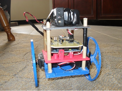

Autonomous Car pt.3

It's been a while since my last update on the autonomous car project. Lots of things have been
changed or redone. The biggest upgrade was replacing the Arduino mega with a Chipkit max32,
which I had discussed in my last post. The increased speed of the Chipkit board has really
improved the car. The first thing I noticed was that the loop time decreased from about 50ms
on the Arduino to around 20ms with the Chipkit. This means that the gyro scope data can be
updated much faster and helps produce a more accurate heading. I highlighted most of the car's
new features in the image below.

One of the added bonuses of the Chipkit is that it has a 3.3V logic level. This works out well since all the sensors are also 3.3V, and I could easily add an SD card for data logging without having to buy a ...
UGV Board for the Autonomous Car
UGV Board v1.1
Unmanned Ground Vehicle board for the ChipKit Max32
The UGV board is my attempt to put together all the things I found useful in building my autonomous car and a few new features that I thought would be good to have. As always you can find the latest source files for all my work on my Github page. The goal was to build a board that will work well with my autonomous car setup but also have the ability to adapt for use in other autonomous robotics projects.
At the time of writing this the UGV v1.1 has the following features.
-
Onboard gyroscope
-
MicroSD card
-
Breakout for a GPS antenna ...
Cell phone charger on HackADay.com
After hurricane Sandy hit my area I was without power for 11 days. During that time I made a simple cell phone charger using a LM317 voltage regulator to stay connected to the outside world.
Autonomous Car pt. 2

After much work with the Python OpenCV library and testing the image processing on the car, I've decided that I'll leave the computer vision part of this project for later. The simple line detection works well for images like the ones in my previous post. But for more complicated images, such as roads without yellow lane markers, line detection won’t be enough. I'm looking into using a neural network with OpenCV to keep the car on the road.
Now I am working on the steering. My goal is for the car to steer into the direction of the next waypoint from its current location. I also got a lot of new stuff for the car. Here's how it looks today. I upgraded to an Arduino mega (see below for why), Xbee for sending data wirelessly to my laptop, and a GPS module.

I spent a lot of ...
Balancing Robot on HackADay.com
My balancing robot made it on Hackaday and got featured on Thingiverse!.
Autonomous Car pt.1

This post will detail my plans and progress for an autonomous car. I’ll be using what I learned from
building the balancing robot and courses though Udacity and MITx.
The goal is to take a small 1/10
remote controlled car and have it navigate a course on its own. To navigate the course, I plan to use an
Android phone, GPS, and an accelerometer/gyroscope. I will record a video stream through the phone
and then process it on my laptop using Python and the computer vision library OpenCV.
The Car
I chose a 1/10 scale car so that it would be large enough to hold all of the electronics. I was worried that
the cheaper and more common 1/16 scale cars would be too small. I found this car on Amazon for ...
Balancing Robot

The goal of this project is to make a self balancing robot, also called an inverted pendulum. The basic idea is that you have a mass located above its pivot point. This causes the robot to be unstable, and without any help, it will quickly fall over. Sensors on the robot will take acceleration and gyroscope measurements, which are sent to a control algorithm. As the robot starts to fall, the control algorithm will send a signal to the motor, telling it which direction and how much to move in order to keep the robot upright. This project involves a huge range of knowledge from mathematics, mechanics, and programming. And as I've quickly learned, the theory is a lot more complex than I originally thought. When I set out to make this robot, I decided to work towards a few specific goals:
- Keep the cost as low as possible ...